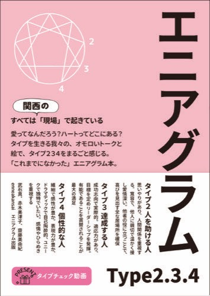
Type2.3.4
販売中
PNG連番やWord原稿を、KDP入稿用のPDF・EPUB・表紙まで整えます。
表紙テンプレートジェネレーター — ページ数・判型・印刷方式から背幅・塗り足し・バーコード配置を自動計算
AI漫画PNG→KDPペーパーバックPDF変換ツール — 画像ページをペーパーバック用PDFに整える
Word原稿→KDP PDF変換ツール — Word原稿をペーパーバック用PDFに整える
EPUBエディタ — ブラウザでEPUBをプレビューしながら編集・再出力
AI漫画PNG→EPUB変換ツール — 画像ページを固定レイアウトEPUBに整える
配布中
表示崩れの原因になる書式指定を見つけて除去します。
Kindle原稿クリーナー — Word原稿の内部XMLを直接解析し、表示崩れの原因になる書式指定だけを除去
個別開発
Web診断からLINE誘導までの導線や、提案資料の自動生成。内容に応じて一緒に組み立てます。
診断ファネル（エニアグラム本能サブタイプ） — Web診断から結果表示、LINE公式アカウントへの導線までを一気通貫で構築
MCPサーバー自作 — LINE公式アカウント連携用のバックエンドをCloudflare Workersに構築・運用
UTAGE構築・運用実績 — 講座・個人セッション事業者向けにファネルを構築
販売中
自著・出版サポートに欠かせません。新刊発売直後の順位変移やベストセラー表示、レビュー数の動きをスクリーンショットで自動記録します。睡眠時間を確保！
Ranking Watcher — 新刊発売直後の見張りと証拠保存に特化したKindle著者向けローカルツール
今の状況やお困りごとをうかがいます。
対応できる範囲と進め方を一緒に決めます。
原稿整形やツール構築など、内容に応じて進めます。
出来上がったものを確認しながら、必要な調整をします。
AI漫画とエニアグラム出版の実績に、デザインと自動化の実務を重ねています。
出版・入稿まわりで繰り返し発生する面倒な悩みを、時短ツールにしてきました。「ここがこうだったらいいのに」という細かいお困りごとを、引き受けます。Kindle作家さんの時短と効率化に直結します。
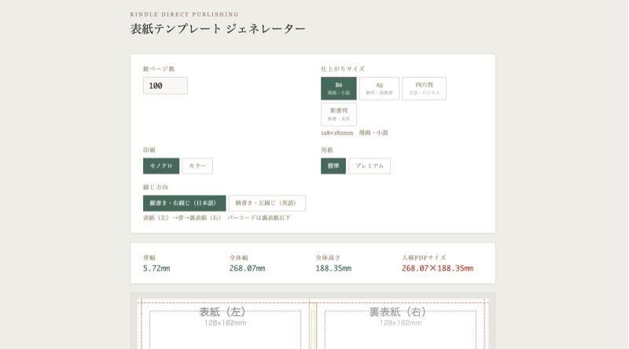
出版・入稿 / one-pub.net
KDP公式ページを読まなくても直感的にテンプレート作成。ページ数・判型・印刷方式から背幅・塗り足し・バーコード配置を自動計算し、入稿用PNGを出力。

出版・入稿 / 自作ツール
AI漫画の画像ページを、KDPペーパーバック用PDFに整えるためのツール。泣きながら何日も格闘していたあの作業が、5分で可能に。
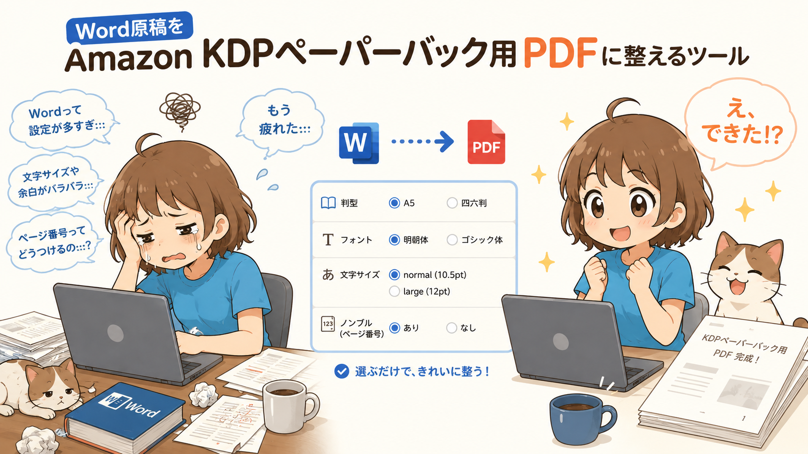
出版・入稿 / 自作ツール
Word原稿をAmazon KDPペーパーバック用PDFに整えるためのツール。判型（A5 / 四六判）・フォント（明朝体 / ゴシック体）・文字サイズ（normal=10.5pt / large=12pt）・ノンブル（ページ番号）の有無を選べます。
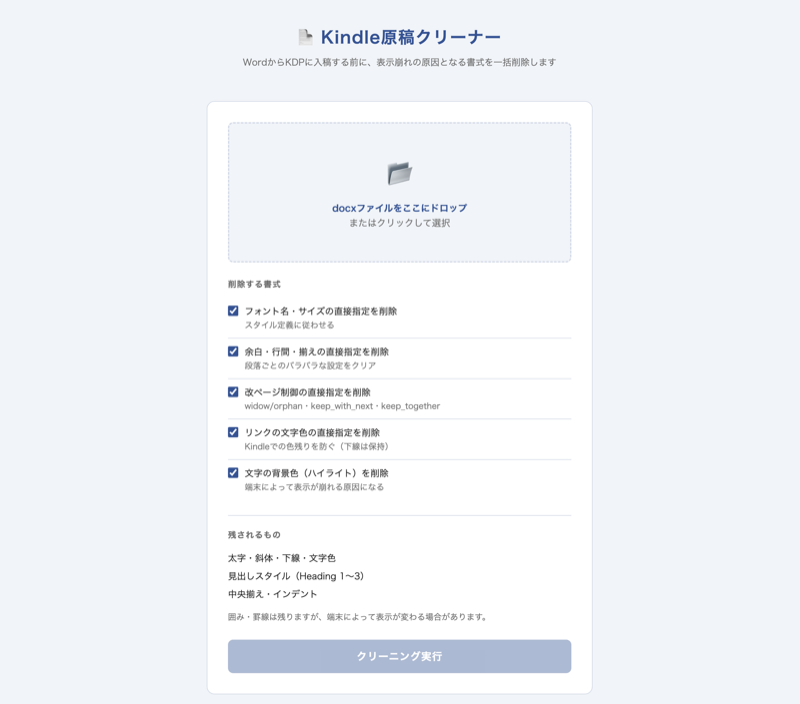
出版・入稿 / one-pub.net
WordからKDPに入稿する前に、表示崩れの原因となる書式を一括削除します。WordやGoogleドキュメントで修正を繰り返した原稿をキレイに。
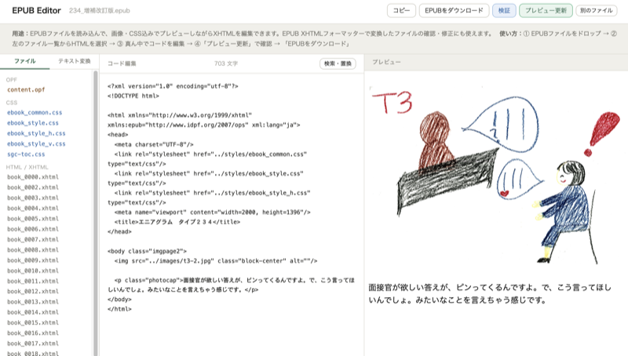
EPUB編集 / 自作ツール
EPUBをブラウザにドラッグ&ドロップし、プレビューしながらXHTMLを編集・検証・再出力。インストール不要。出版後のEPUBを直接編集できます。これまで圧縮／解凍を繰り返していた作業がゼロに。
EPUB編集 / 自作ツール
画像ページを固定レイアウトEPUBに整えるためのツール。「Kindle Create」を使わなくてもAI漫画の出版データが作成可能。論理目次も簡単につけられます。
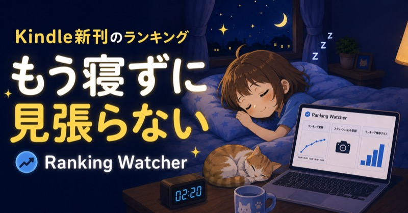
販売中 / Brain
新刊発売直後の見張りと証拠保存に特化した、Kindle著者向けローカルツール。順位とベストセラーを、あとから確認できる形で残す。著者さんの睡眠時間を確保。出版プロデュースにも必須。
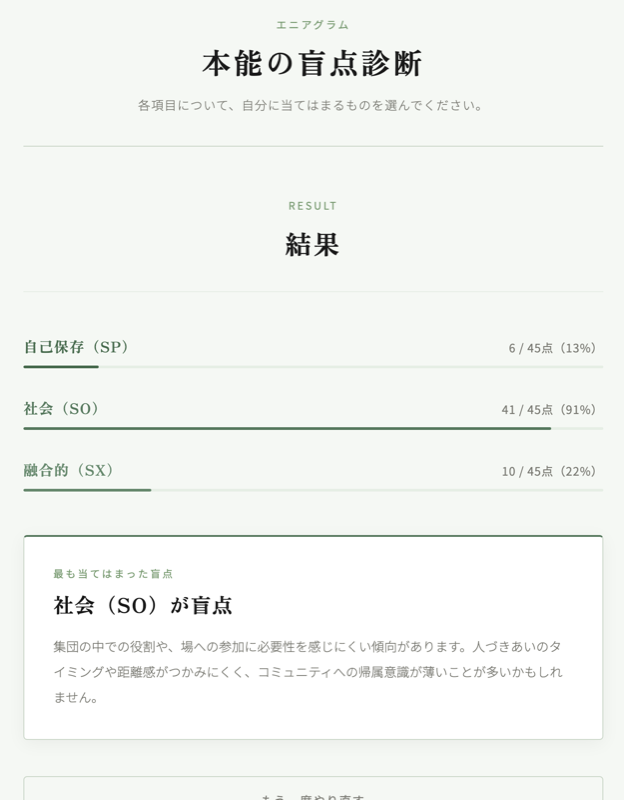
診断導線 / one-pub.net
Web診断から結果表示、LINE公式アカウントへの導線までを、UTAGEを経由して一気通貫で構築。

Type2.3.4
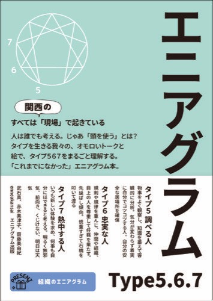
Type5.6.7
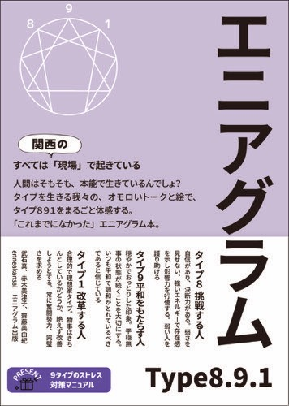
Type8.9.1
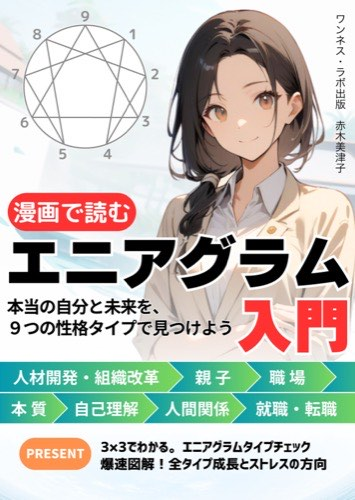
漫画で読むエニアグラム入門
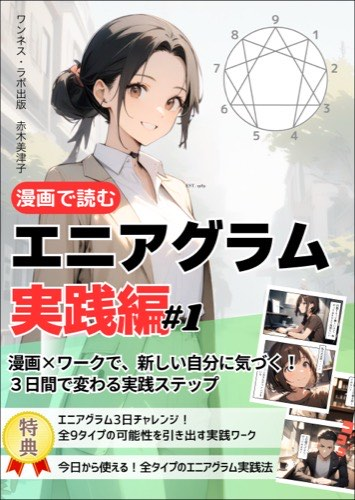
エニアグラム実践編
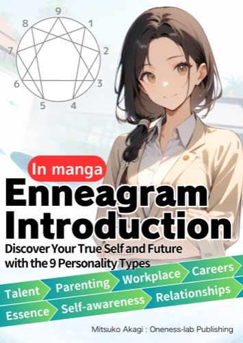
In manga Enneagram Intro
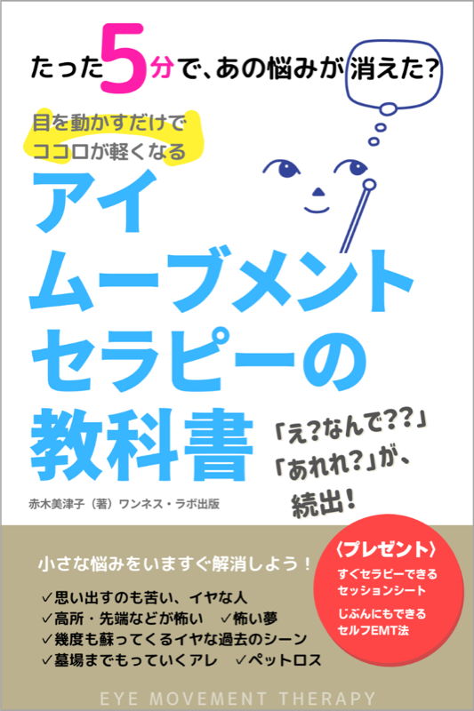
アイムーブメントセラピー
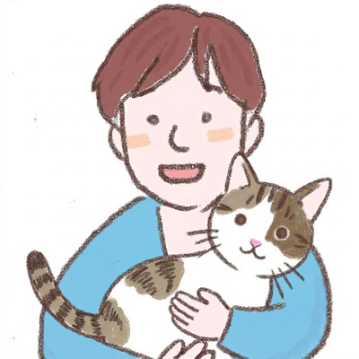
ベストセラー作家 / AIマンガクリエイター
大阪府茨木市出身、兵庫県宝塚市在住。若い頃から人の性格に興味があり、漫画も模写していました。エリクソン催眠講座やアニマルコミュニケーション講座を主催し、その先でエニアグラムに出会いました。それがデザイン35年、エニアグラム16年、AI漫画とKindle出版の制作支援につながっています。ニッチで説明しづらい困りごとを、道具と手順に落とし込むのが得意です。